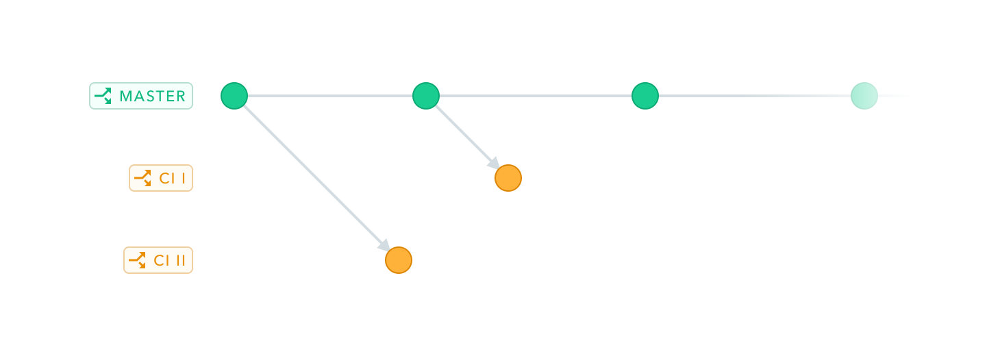
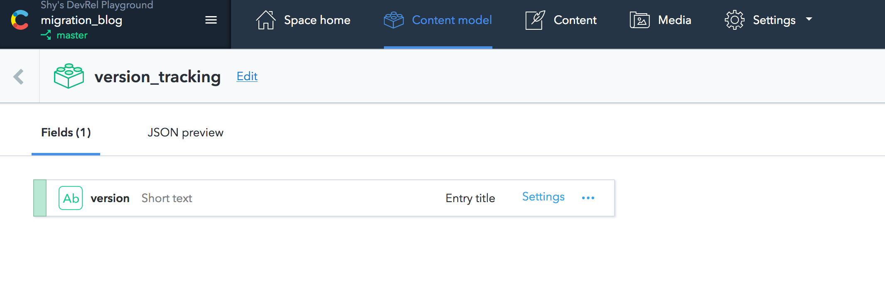
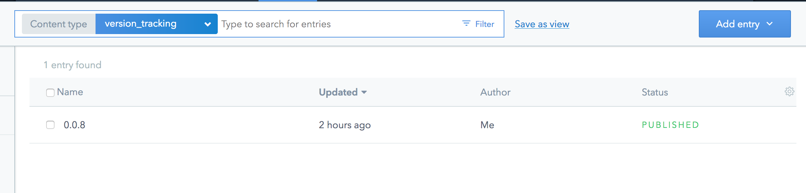

Content testing and deployment
done the right way

By Shy Ruparel

Shy Ruparel
Developer Evangelist
Twitter: @ShyRuparel
Talks: GitHub/Shy/Talks
Building Software
Nobody gets it right the first time
When you can’t have perfection, the next best thing is change.
What could go wrong?

Let's talk about the
Contentful Migration CLI 🚚
TL;DR
What you can do
- ⚒ Create content type
- ❌ Delete content type
- ⌨ Edit content type
- ⚒ Create/edit/delete fields
- 🏑 Change field ID
All in Javascript
Callable via the Contentful CLI
Programmatic Content model changes
Advantages
- Repeatable
- Can be kept in version control
- Sanity checks
- Use CI to apply.
Demo
That's nice
But what if I want to discard, test or preview a migration?

Space Environments 🚀
Space environments allow you to create multiple versions of the space, and change them in isolation.

Initialize the client
Initialize the client with environments
Combine migrations with environment
Common uses for space environments
- Local development
- Staging / QA
- Continuous integration
Let's talk about
Continuous Integration

A simple Continuous Integration pipeline:
- Build
- Test
- Deploy
Integrating Migrations into CI Pipeline:
- Build
- Create a new environment
- Migrate new environment
- Test
- Deploy
- Migrate master environment
Build & Test

Deploy

Keeping code and content model in sync

Version Tracking Content Model
Version Tracking Content
Migration Files

CircleCI config.yml - Configure Contentful
- run:
name: Preparing environment for testing
command: |
. venv/bin/activate
scripts/migrate.js $SPACE_ID
"CI_$CIRCLE_BRANCH" $MANAGEMENT_API_KEY
CircleCI config.yml - Update Testing
- run:
name: run tests
command: |
. venv/bin/activate
pytest --environment-id="CI_$CIRCLE_BRANCH"
Let's dig into migrate.js
Utilize the Contentful CMA
const { createClient } = require('contentful-management');
//...//
const client = createClient({
accessToken: CMA_ACCESS_TOKEN
});
const space = await client.getSpace(SPACE_ID);
Does the environment exist?
console.log(`Checking for existing versions of environment: ${ENVIRONMENT_ID}`);
try {
environment = await space.getEnvironment(ENVIRONMENT_ID);
if (ENVIRONMENT_ID != 'master'){
await environment.delete();
console.log('Environment deleted');
}
} catch(e) {
console.log('Environment not found');
}
Create the environment
if (ENVIRONMENT_ID != 'master'){
console.log(`Creating environment ${ENVIRONMENT_ID}`);
environment = await space.
createEnvironmentWithId(ENVIRONMENT_ID,
{ name: ENVIRONMENT_ID });
}
Allow API Key access
console.log('Update API Keys to allow access to new environment');
const newEnv = {
sys: {
type: 'Link',
linkType: 'Environment',
id: ENVIRONMENT_ID
}
}
const {items: keys} = await space.getApiKeys();
await Promise.all(keys.map(key => {
console.log(`Updating - ${key.sys.id}`);
key.environments.push(newEnv);
return key.update();
}));
Run needed Migrations
console.log('Run migrations and update version entry');
while(migrationToRun = migrationsToRun.shift()) {
const filePath = path.join(__dirname, '..', 'migrations', getFileOfVersion(migrationToRun));
console.log(`Running ${filePath}`);
await runMigration(Object.assign(migrationOptions, {
filePath
}));
console.log(`${migrationToRun} succeeded`);
storedVersionEntry.fields.version[defaultLocale] = migrationToRun;
storedVersionEntry = await storedVersionEntry.update();
storedVersionEntry = await storedVersionEntry.publish();
console.log(`Updated version entry to ${migrationToRun}`);
}
console.log('All done!');
Demo
Integrate evolving your content model into your delivery pipeline
Check out the example:
github.com/contentful-labs/continous-delivery-environments-example
Shy Ruparel
Twitter: @ShyRuparel
Email: shy@contentful.com
Talks: GitHub/Shy/Talks